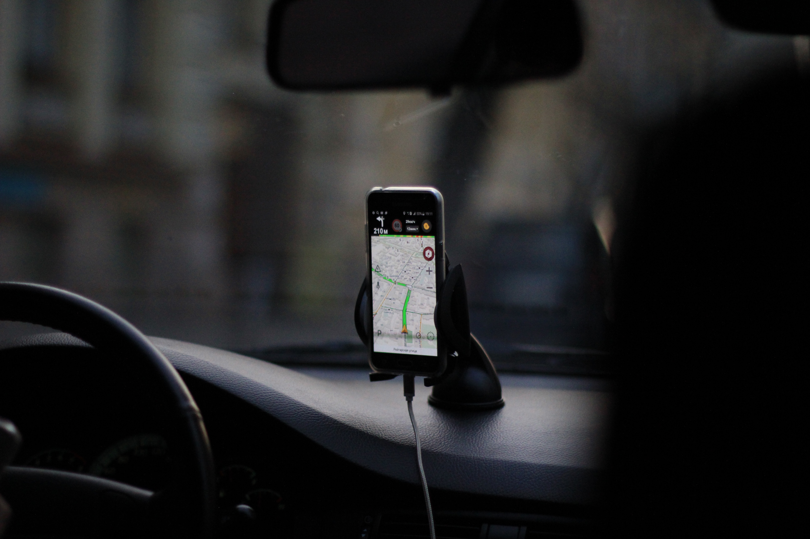

<ion-header [translucent]="true">
  <ion-toolbar>
    <ion-buttons slot="start">
      <ion-menu-button></ion-menu-button>
    </ion-buttons>
    
  </ion-toolbar>
</ion-header>

<ion-content [fullscreen]="true">


  <div id="container">
    
    <ion-row>
      <ion-col>
        <ion-item>
          <ion-button color="dark" shape="block" [routerLink]="['/choferes']">Ver choferes disponibles</ion-button>
        </ion-item>
      </ion-col>
    </ion-row>
  </div>
</ion-content>